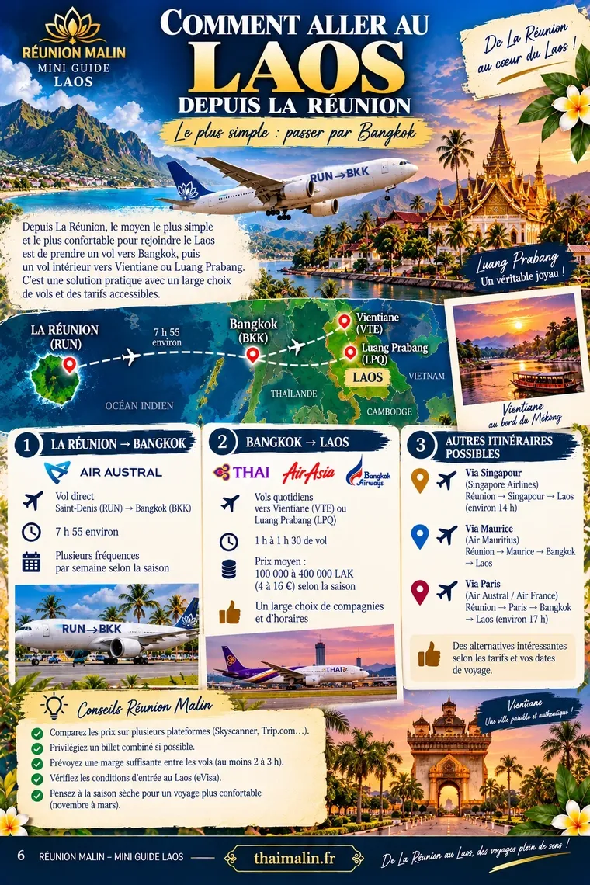
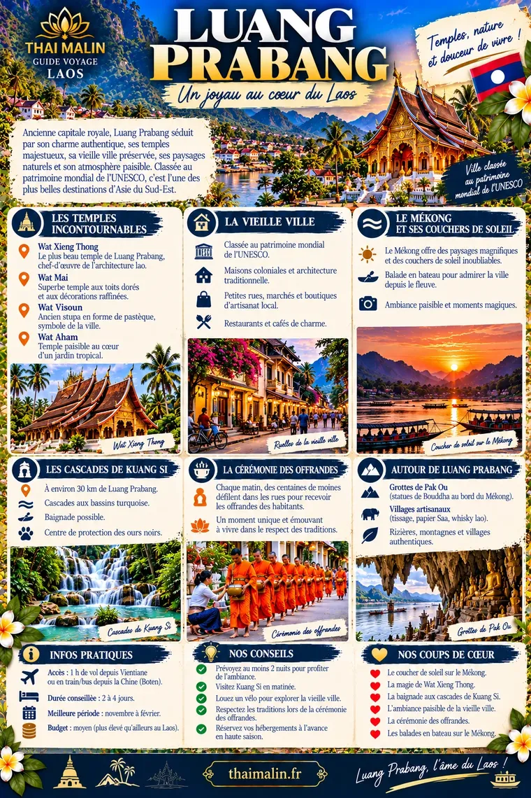
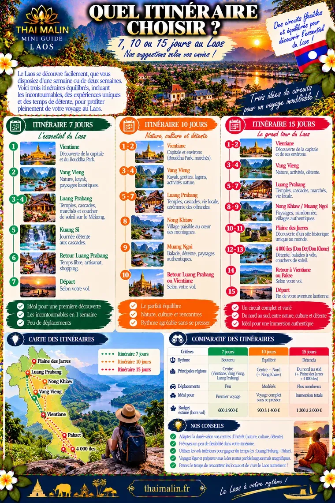

Aperçu gratuit · Édition 2026
🐘 Mini-guide Laos
Luang Prabang, Vientiane, le royaume du Mékong
Comment aller au LaosAperçu 1/3

Luang PrabangAperçu 2/3

Quel itinéraire choisir ?Aperçu 3/3

Il reste 23 pages à découvrir
Dans le guide complet :
- Luang Prabang, Vang Vieng, Vientiane
- Nord, Sud-Est, Sud, plateau des Bolovens
- Les 4 000 îles
- Manger, boire et sortir
- Budget, internet et eSIM
- Quand partir, quoi mettre dans son sac
- Itinéraires de 5 à 12 jours
Paiement sécurisé Stripe. Ton code arrive par e-mail juste après l’achat.